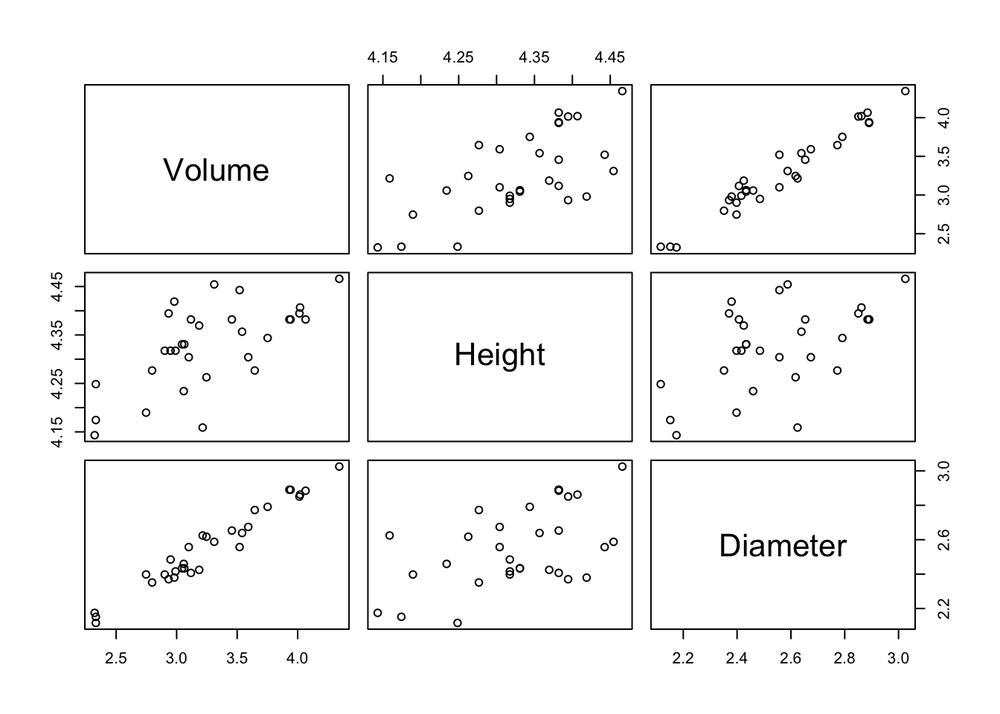

10.3 Prediction: Black Cherry trees
Example: Black cherry trees
Data are available from 31 Black Cherry trees. The data file consists of three variables:
Girth |
diameter in inches at 4.5 feet above ground level |
Height |
tree height in feet |
Volume |
volume of timer in cubic feet |
The aim is to investigate how well we can predict the volume of wood in each tree trunk from simple measurements which can be made near the ground.
The dataframe
treesis available inR. Actually, the variableGirthdoes not really contain girth measurements. We should begin by renaming this variable.Plot the data to explore how well
Volumecan be predicted from the other two measurements.Can you build a model which gives good predictions?
We begin by renaming the Girth variable, as it is really Diameter. Setting the Girth to NULL will remove it.
A pairs plot gives us a useful overall view. It would be neater to place the Volume variable first, so that it appears in the top row. The square bracket syntax allows us to put the columns of the dataframe in a different order. It is also useful to apply a log transformation. Can you see why? (And what more appropriate transformation could there be for trees? :-))

Now we fit a regression model
## Estimate Std. Error t value Pr(>|t|)
## (Intercept) -6.631617 0.79978973 -8.291701 5.057138e-09
## log(Diameter) 1.982650 0.07501061 26.431592 2.422550e-21
## log(Height) 1.117123 0.20443706 5.464388 7.805278e-06This model can also be explored visually through the rp.lm function.
Although Diameter and Height both carry information which can help in predicting the response (as we can see through the confidence intervals), the predictive power of the model needs to be considered. The coefficient of determination, usually denoted by \(R^2\), measures the proportion of variation in the response variable which is explained by the explanatory variables in the model. One measure of total variation in the response variable is
\[
TSS = \sum_{i=1}^n (y_i - \bar{y})^2 .
\]
This is equivalent to fitting a model which has no explanatory variables - it only has an intercept, estimated by \(\\bar{y}\). The variation which remains after including the explanatory variables in the model is simply the residual-sum-of-squares.
\[
RSS = \sum_{i=1}^n (y_i - \hat{y}_i)^2 ,
\]
where \(\hat{y}_i\) denotes the ‘fitted value’ for the \(i\)th observation. \(R^2\) is then defined as the proportionate drop in variation explained by these two models, namely
\[
R^2 = \frac{TSS - RSS}{TSS}
\]
\(R^2\) can be adjusted to account for different numbers of explanatory variables in different models being compared.
modelD <- lm(log(Volume) ~ log(Diameter), data = trees)
modelH <- lm(log(Volume) ~ log(Height), data = trees)
summary(modelD)$r.squared## [1] 0.9538743## [1] 0.4207309The model which uses Diameter alone is almost as good as that of the model
which uses both. There is therefore a strong argument, for practical
reasons, to use Diameter information alone, as it is easy to measure.